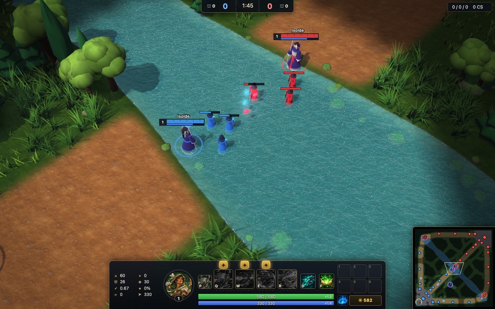
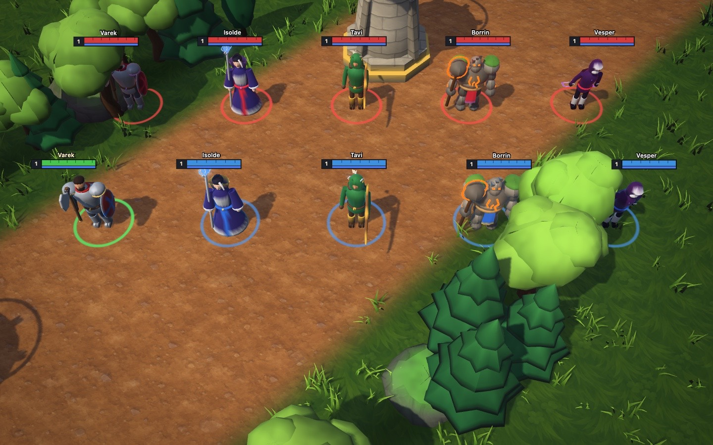
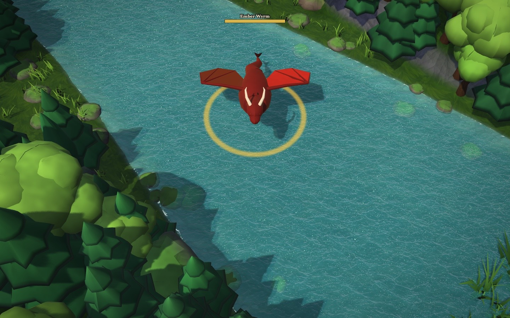

Dawn against Dusk
Two teams of five start in opposite corners. Minions march down the top, middle and bottom lanes every wave. Towers and barracks fall in order, and the match ends the moment a team breaks the other side's Core.
Between the lanes is jungle: camps to clear for gold, 22 patches of tall brush to hide in, and fog of war that hides anything your team can't see.
Dawn
Blue and gold, based in the bottom-left corner.
Dusk
Crimson and violet, based in the top-right corner.

Five champions
Each one owns a lane and a job. Every champion has a passive and four abilities on Q, W, E and R.

Varek, the Iron Warden
Top lane fighter
Axe and shield. Cleaves, shields up, charges into the first enemy in the way, then leaps in to knock a whole group into the air.
Isolde, the Stormcaller
Mid lane mage
Throws lightning, drops a slowing static field, blinks out of trouble and calls down a storm of five strikes.
Tavi, the Windarcher
Bottom lane marksman
Every fourth shot hits harder. Tumbles, pierces a line of enemies and fires a huge long-range arrow that stuns the first champion it hits.
Borrin, the Stonehide
Support tank
Takes less damage from minions and towers, shields the nearest ally, rams enemies into the air and shatters the ground to stun.
Vesper, the Duskblade
Jungle assassin
Hunts camps, turns invisible, poisons with a fan of daggers and finishes wounded champions for up to double damage.

Two monsters in the river
The river splits the map in two. Fight over it when the big monsters wake up.
Ember Wyrm
Bottom river, from 5:00. Each kill gives the whole team gold and a permanent stack of extra attack damage and ability power.
Ancient Colossus
Top river, from 15:00. Gives every living ally three minutes of bonus damage, a four-second recall and stronger minions nearby.